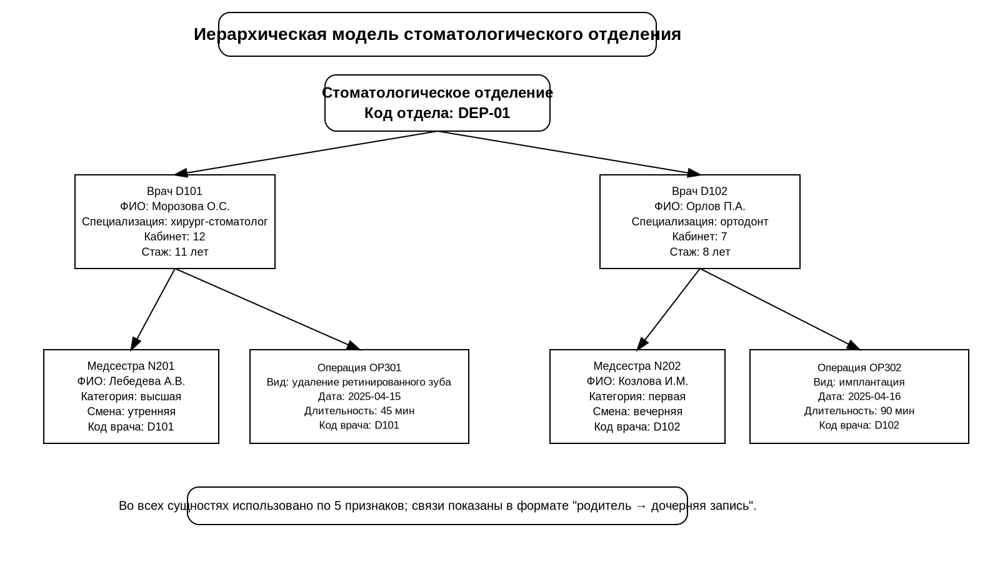
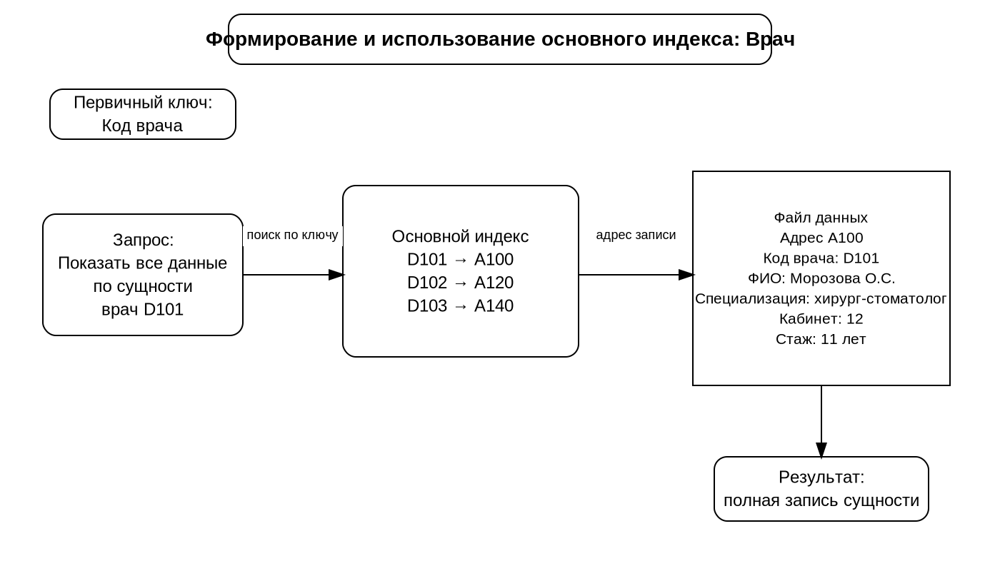
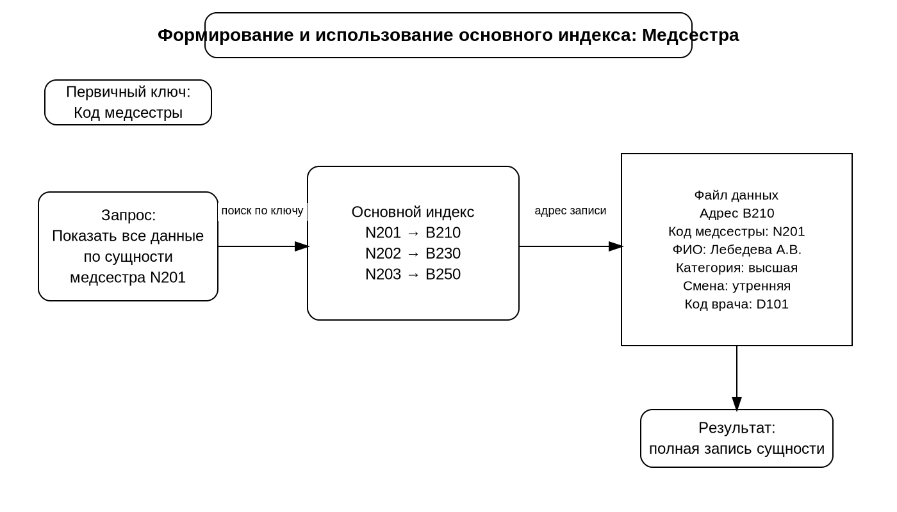
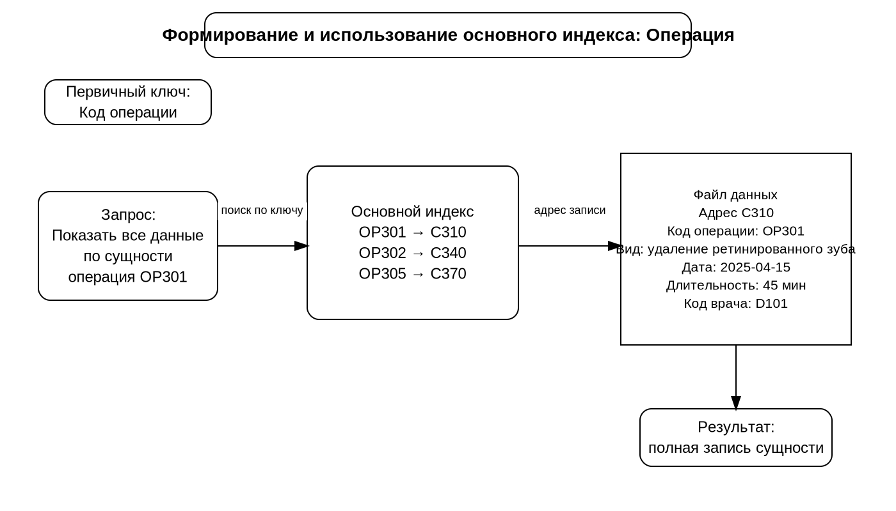
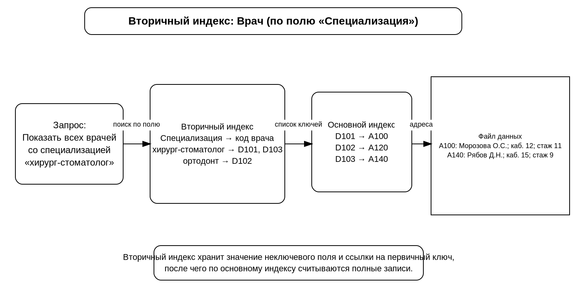
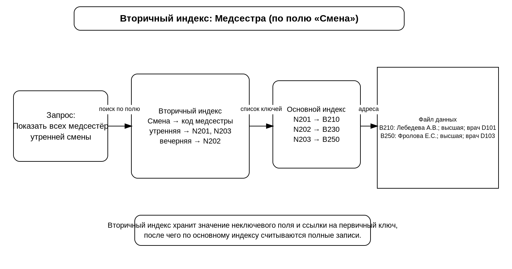
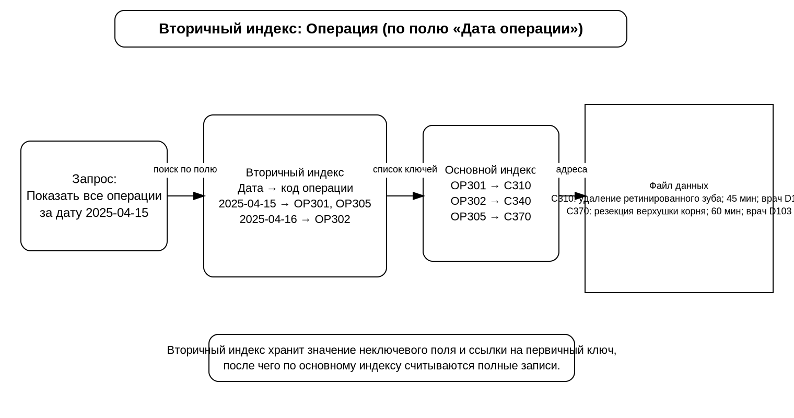

13.04.2026
Тема: Схемы индексных файлов — стоматологическое отделение (врач, медсестра, операция)
Сущности и признаки
- Врач: код врача, ФИО, специализация, кабинет, стаж.
- Медсестра: код медсестры, ФИО, категория, смена, код врача.
- Операция: код операции, вид операции, дата, длительность, код врача.
Ниже размещены все 7 файлов, как требовалось в задании.
1. Общая иерархическая модель
Общая иерархическая модель стоматологического отделения с сущностями «врач», «медсестра» и «операция».
Скачать .drawio

2. Врач
Схема основного индекса для сущности «врач».
Скачать .drawio

3. Медсестра
Схема основного индекса для сущности «медсестра».
Скачать .drawio

4. Операция
Схема основного индекса для сущности «операция».
Скачать .drawio

5. Врач (по полю «Специализация»)
Вторичный индекс для сущности «врач» по полю «специализация».
Скачать .drawio

6. Медсестра (по полю «Смена»)
Вторичный индекс для сущности «медсестра» по полю «смена».
Скачать .drawio

7. Операция (по полю «Дата операции»)
Вторичный индекс для сущности «операция» по полю «дата».
Скачат .drawio
